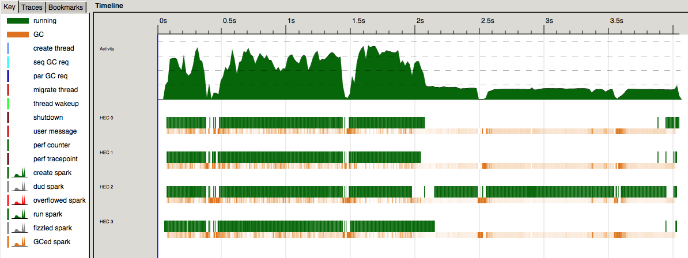
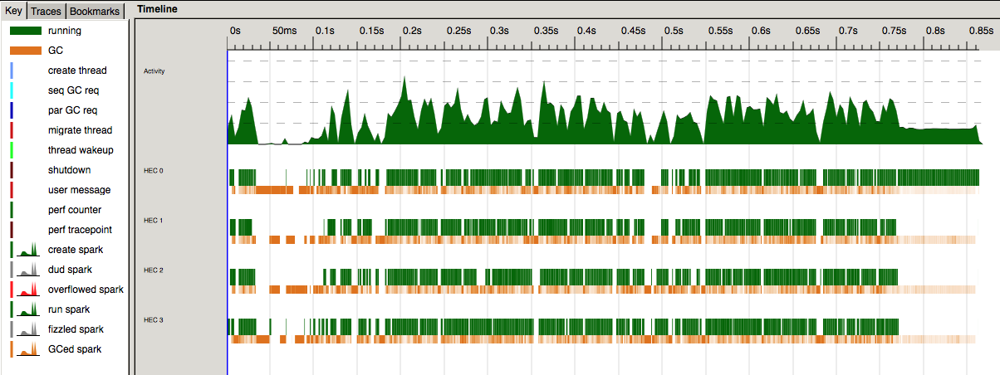

Parallel combinatorics
As part of an algorithm, I was meant to generate the whole set of all k − combinations efficiently. This may seem a really simple task but it is actually a little bit tricky, specially if one wants to handle large n/k values. The are out-of-the-box solutions which “do the job” but actually don’t work at all for not so big numbers.
Naive solutions can be implemented at once. For instance, the following would compute all comb(20, 5) combinations (please, consider to grab a coffee…) :
import Control.Monad
replicateM 5 [1..20]As you may have noticed, this took a while, and it gets worse as n gets larger. If you study the shape of this function you will find out the worst case is reached when k = n/2. This post is about what other options are possible to generate the whole comb(n, k) set efficiently and specially, how to run them in parallel.
K-bit numbers
The above problem can be seen as generating all binary strings with exactly k bits set, or which is equivalent, finding all k-bit numbers between the following range:
$$[2^k - 1, \sum_{i=n-k}^{n-1} 2^i]$$
With some bit trickery and given a number with exactly k bits set, it is easy to obtain the following number (in ascending order) with the same number of bits set:
import Data.Bits
nextKBitNumber :: Integer -> Integer
nextKBitNumber n
| n == 0 = 0
| otherwise = ripple .|. ones
where smallest = n .&. (-n)
ripple = n + smallest
newSmallest = ripple .&. (-ripple)
ones = (newSmallest `div` smallest) `shiftR` 1 - 1Following this idea, one might think it is easy to parallelize the task of generating the comb(n, k) set as follows:
- Split the initial range into m smaller ranges (m1, m2),(m2, m3),...,(mm − 1, mm)
- For each range split, keep using
nextKBitNumberuntil the range end is exceeded, in parallel (1)
For (1) I decided to use the Data.Stream package, which offers some really handy methods. Streams can be seen as infinite lists and most operations are completely analogous to the definition of Data.List.
The idea of iterating over the nextKBitNumber is well expressed with the iterate function, which produces the infinite sequence of repeated applications of f to x:
-- iterate f x = [x, f x, f (f x), ...]
iterate :: (a -> a) -> a -> Stream aIn this context, we can create a Stream of k-bit numbers pretty easily:
import qualified Data.Stream as S
-- | Creates a stream of k-bit numbers using the 'nextKBitNumber' generator.
kBitNumbers :: Integer -> S.Stream Integer
kBitNumbers = S.iterate nextKBitNumberWhen generating the range splits we have to be careful so that no numbers are repeated (fixedRanges takes care of that). The rest is pretty straightforward:
import Debug.Trace
import Data.Digits
import Data.Char
import System.IO
-- Splits the range defined by 'n' and 'k' into 'numSplits' parts
splits' :: Int -> Int -> Int -> [(Integer, Integer, Int, Int)]
splits' n k numSplits = fixedRanges ranges [] 0
where s = start k
e = end n k
step = (e-s) `div` (min (e-s) (toInteger numSplits))
initSplits = [s,s+step..e]
ranges = zip initSplits (tail initSplits)
fixedRanges [] acc _ = acc
fixedRanges [x] acc splitId = acc ++ [(fst x + 1, e, k, splitId)]
fixedRanges (x:xs) acc splitId = if splitId == 0
then fixedRanges xs (acc ++ [(fst x, snd x, k, splitId)]) (splitId + 1)
else fixedRanges xs (acc ++ [(fst x + 1, snd x, k, splitId)]) (splitId + 1)
-- Runs a split and saves generated combinations to a file
runSplit' :: Int -> (Integer, Integer, Int, Int) -> IO ()
runSplit' n (start, end, k, splitId) = do
trace ("Running split " ++ show start ++ "-" ++ show end ++ "(" ++ show splitId ++ ")") (return ())
fileHandler <- openFile ("test_" ++ show splitId ++ ".txt") WriteMode
hSetBuffering fileHandler $ BlockBuffering (Just 1000)
let allCombsInSplit = S.takeWhile (<= end) $ kBitNumbers (fixStart start)
where fixStart s
| popCount s == k = s
| otherwise = fixStart $ s + 1
dec2bin = reverse . map intToDigit . unfoldr (\x -> if x == 0 then Nothing else Just(rem x 2, div x 2)) . fromIntegral
mapM_ (hPutStrLn fileHandler) $ fmap dec2bin allCombsInSplit
hClose fileHandlerIn order to run these IO actions in parallel I have used the parallel-io package, which offers combinators for sequencing IO actions onto a thread pool. Since each thread will generate an auxiliar text file to store the corresponding combinations, such files are required to be merged later on. For this, I played a little bit with the Turtle package, which turned out to be a joy to work with and I will be using for my shell scripts from now on (when possible, you know…):
import System.Environment
import Control.Monad.ParallelIO
import Turtle
import qualified Control.Foldl as L
main :: IO ()
main = do
params <- getArgs
let n = read $ params !! 0
k = read $ params !! 1
numTasks = read $ params !! 2
sps = splits n k numTasks
parallel_ (fmap (runSplit n) sps) >> stopGlobalPool
-- Read generated .txt files and concatenate them
files <- fold (find (suffix ".txt") ".") L.list
let concat = cat $ fmap input files
output (fromString $ show n ++ "-" ++ show k ++ ".txt") concat
-- Remove old .txt files
mapM_ rm filesThe main drawback of this approach is that work is actually not equally distributed over all CPU cores, since the distribution of k-bit numbers is not uniform over all the range splits. On the other hand, it is not clear how many splits should be generated for arbitrary n and k values. This was made obvious after profiling our program and visualizing the results with ThreadScope:

The above eventlog corresponds to a run for n = 30 and k = 5 on my MacBook Pro. As we can see, there is a point where only one single core is doing the work and the rest are “sleeping”; this is a clear evidence our approach for parallelization failed so we have to find some sort of alternative.
Combinadic numbers to the rescue
Scratching a little bit on Stackage/Hackage I found an interesting package called permutation which turned out to be a lifesaver. The package name is self explanatory so it provides basically what it says, permutations and combinations sorcery.
In my case, I found useful the choose function in Data.Choose, which given arbitrary n and k values returns the first combination of k outcomes out of n possibilities. At the same time, given an arbitrary combination, next returns the next combination (if existing), in lexicographic order:
-- Our handy functions
choose :: Int -> Int -> Choose
next :: Choose -> Maybe ChooseGiven arbitray n and k values we know the total number of possible combinations:
$$\binom{n}{k} = \frac{n!}{k!(n-k)!}$$
Since using factorials may overflow (not really in our case, since we are using the Integer type), it is a safer bet to compute all possible combinations using binomials instead:
$$\binom{n}{k} = \frac{n}{k}\binom{n-1}{k-1}$$
This formula translates automatically into Haskell:
-- | Returns the total number of 'n' over 'k' combinations using binomials instead of factorials.
combination :: Integer -> Integer -> Integer
combination n 0 = 1
combination 0 k = 0
combination n k = combination (n-1) (k-1) * n `div` kBut there is still a missing bit. In order to take advantage of the next function we saw above and parallelize our code we should be able to find the ith-combination. Combinadic numbers offer a unique mapping from comb(n, k) but do not hold the lexicographic order property. By chance, I found this post on Reddit where a user was playing around with the same stuff in Julia. The thread took some attention and /u/thewataru proposed a solution with O(n) cost. I simply translated it and worked like a charm!
-- | Returns the ith-combination using combinadic numbers mapping.
combinadic :: Integer -> Integer -> Integer -> [Int]
combinadic n k i = iterate 0 (n-1) k i []
where iterate idx n k m acc
| k == 0 = reverse $ fmap fromIntegral acc
| otherwise = if m < comb then iterate (idx + 1) n (k - 1) m (idx : acc)
else iterate (idx + 1) n k (m - comb) acc
where comb = combination (n - idx) (k - 1)We should be now good to go to parallelize our code following the same idea we commented for kBitNumbers, with the difference that now the work is well balanced across all CPU cores.
splits :: Int -> Int -> Int -> [(Integer, Integer, Int, Int)]
splits n k numSplits = fixedRanges ranges [] 0
where s = 0
e = combination (fromIntegral n) (fromIntegral k)
step = (e-s) `div` (min (e-s) (toInteger numSplits))
initSplits = [s,s+step..e]
ranges = zip initSplits (tail initSplits)
fixedRanges [] acc _ = acc
fixedRanges [x] acc splitId = acc ++ [(fst x + 1, e, k, splitId)]
fixedRanges (x:xs) acc splitId = if splitId == 0
then fixedRanges xs (acc ++ [(fst x, snd x, k, splitId)]) (splitId + 1)
else fixedRanges xs (acc ++ [(fst x + 1, snd x, k, splitId)]) (splitId + 1)
runSplit :: Int -> (Integer, Integer, Int, Int) -> IO ()
runSplit n (start, end, k, splitId) = do
trace ("Running split " ++ show start ++ "-" ++ show end ++ "(" ++ show splitId ++ ")") (return ())
fileHandler <- openFile ("test_" ++ show splitId ++ ".txt") WriteMode
hSetBuffering fileHandler $ BlockBuffering (Just 1000)
let allCombsInSplit = iterate startingComb (end - start + 1) []
where startingComb = Just $ listChoose n (fromIntegral k) combinationIdxs
combinationIdxs = combinadic (fromIntegral n) (fromIntegral k) start
iterate _ 0 acc = reverse acc
iterate (Just c) n acc = iterate (next c) (n-1) (elems c : acc)
iterate _ n acc = reverse acc
idxsToString idxs n = fmap one withIdx
where withIdx = zip (replicate n '0') [0..]
one x = if snd x `elem` idxs then '1' else '0'
mapM_ (hPutStrLn fileHandler) $ fmap (`idxsToString` n) allCombsInSplit
hClose fileHandlerThe main remains the same, just using splits instead of splits' and runSplit instead of runSplit'. We can profile our code to see we achieved our purpose and all cores are used at their max:

Please notice how this version performed ~4x faster.
Conclusions
We could see how parallelizing code is not always as easy as one might expect. Sometimes even, we could think our code is working as expected but it is not, and this is when tools like ThreadScope or the GHC profiler help us to know what is really going on under the hood and spot problems.
The problem was interesting enough to play with new packages I haven’t tried yet such as parallel-io and Turtle and which I will be probably using from now on.